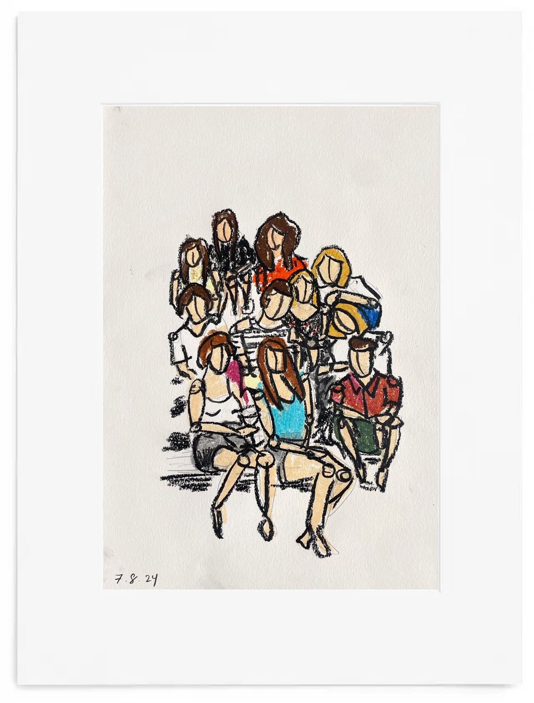
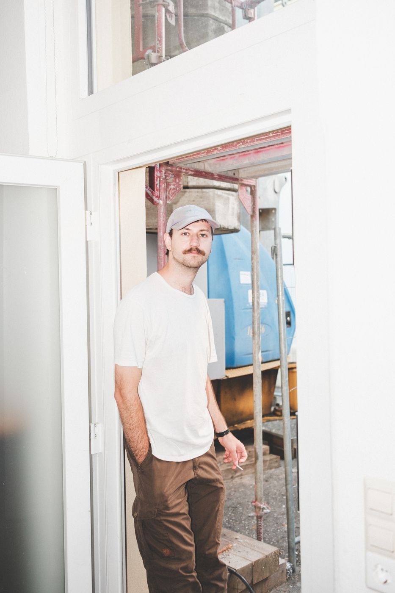
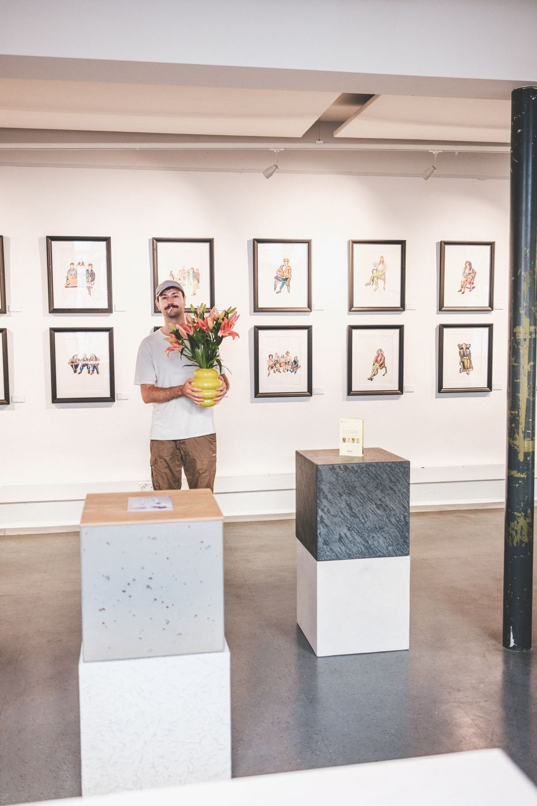

Lukas Bärmann
Bildender Künstler · Freiburg im Breisgau
Figurative Zeichnungen in Ölpastellkreide – beiläufige Momente, Körperhaltungen und die Beziehungen zwischen Menschen.
Werke ansehen
Werke
Ausgewählte Zeichnungen in Ölpastellkreide auf Malpapier, Format A3. Für Anfragen zu einzelnen Arbeiten genügt eine kurze Nachricht.

Nordlichter
Ölpastellkreide auf Malpapier · A3

Sonntagsausfahrt
Ölpastellkreide auf Malpapier · A3

at Bächle
Ölpastellkreide auf Malpapier · A3

Junge Väter
Ölpastellkreide auf Malpapier · A3

ZMF 2
Ölpastellkreide auf Malpapier · A3

ZMF 1
Ölpastellkreide auf Malpapier · A3

Casa di pietra
Ölpastellkreide auf Malpapier · A3

Erwartungen
Ölpastellkreide auf Malpapier · A3

Grechetto
Ölpastellkreide auf Malpapier · A3

Schröders
Ölpastellkreide auf Malpapier · A3

Stammtisch
Ölpastellkreide auf Malpapier · A3

Despedida
Ölpastellkreide auf Malpapier · A3

Gedanken an Sophia Loren
Ölpastellkreide auf Malpapier · A3

Kraniche
Ölpastellkreide auf Malpapier · A3

Akt mit rotem Handtuch
Ölpastellkreide auf Malpapier · A3

Der zweifache Eros
Ölpastellkreide auf Malpapier · A3

Das Schöne
Ölpastellkreide auf Malpapier · A3

Sommerabend
Ölpastellkreide auf Malpapier · A3

Zigarettenpause
Ölpastellkreide auf Malpapier · A3

Self care
Ölpastellkreide auf Malpapier · A3

Nach dem Tanzen
Ölpastellkreide auf Malpapier · A3

Untitled
Ölpastellkreide auf Malpapier · A3
Motive und Arbeitsweise
Ausgangspunkt meiner Arbeiten sind häufig beiläufige Situationen und Körperhaltungen, die ich im Alltag beobachte oder fotografisch festhalte. In der Zeichnung löse ich die Figuren zunehmend aus ihrem ursprünglichen Umfeld. Dabei geht es mir weniger um eine genaue Wiedergabe als um die Haltung, die Beziehung der Personen zueinander und die Stimmung des beobachteten Moments.
Aus dieser Reduktion entwickelt sich anschließend die malerische Arbeit. Meine Werke entstehen in unterschiedlichen Techniken. Neben Acryl- und Ölmalereien bilden Zeichnungen mit Ölpastellkreide auf Leinwand oder Malkarton einen besonderen Schwerpunkt.



Über mich
Ich lebe und arbeite in Freiburg im Breisgau und bin seit 2023 als freischaffender Künstler tätig.
Im Mittelpunkt meiner Arbeit stehen figurative Zeichnungen in Ölpastellkreide; daneben entstehen Acryl- und Ölmalereien. Meine Arbeiten waren unter anderem in Freiburg und Kaiserslautern zu sehen, zuletzt gemeinsam mit dem Künstler Erold Sommer.
Ausstellungen
- 2026Drinnen & Draußen – mit Erold SommerBIERLE Bar, Freiburg · Vernissage am 5. Oktober 2026
- 2026Platonic Symposium: Formen der Liebe – mit Erold SommerGalerie des Westpfalz-Klinikums, Kaiserslautern · Januar bis März 2026
- 2025Platonic SymposiumWeingut und Brennerei Andreas Dilger, Freiburg

Presse
- Westpfalz-Klinikum GmbH – „Formen der Liebe. Zeichnungen von Lukas Bärmann und Erold Sommer fangen reale Momente ein“ · Pressemitteilung, Januar 2026 · Lesen
- Die Rheinpfalz – „Ausstellung im Westpfalz-Klinikum“ · Ausgabe Kaiserslautern, 8. Januar 2026
- Treffpunkt Pfalz – „Kunstausstellung ‚Formen der Liebe‘ von Januar bis März 2026 in Kaiserslautern“ · 5. Januar 2026 · Lesen
- Badische Zeitung – „Kunstausstellung“ · Ausgabe Freiburg, 25. Juni 2025
- tacker.fr – „Vernissage der Kunstausstellung ‚platonic symposium‘“ · Juni 2025 · Lesen
Kontakt
Für Anfragen zu Werken, Ankäufen, Aufträgen oder Ausstellungen freue ich mich über eine Nachricht.
art@lukasbaermann.de Instagram: @lukasbaermann